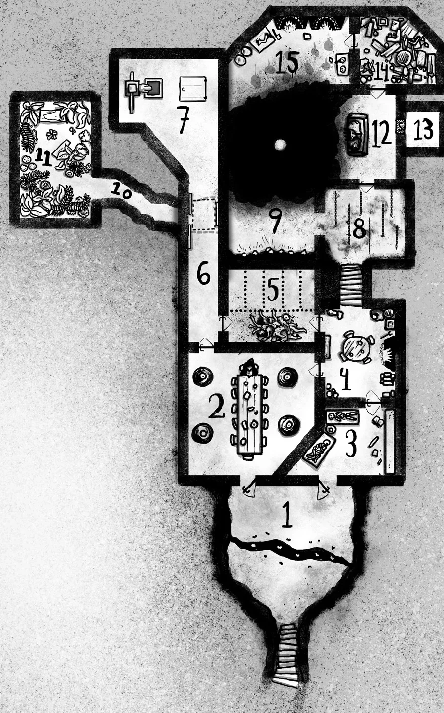

Dunkel und kalt, Licht am Ende des Korridors. Geigenmusik.
Die Fallgrube entdecken: Mit genug Licht und einer erfolgreichen Präsenzprobe SG14 (durch den SC mit der höchsten Präsenz) sind kantige Linien im Boden zu erkennen.
Gemälde abnehmen oder geraderücken: Nimmt jemand ein Gemälde ab, lässt die Fallgrube die SC in Raum 10 (den Tunnel) stürzen. Der Sturz verursacht W6 Schaden.
Leichter Schwefelgeruch. Geigenmusik ist zu hören.